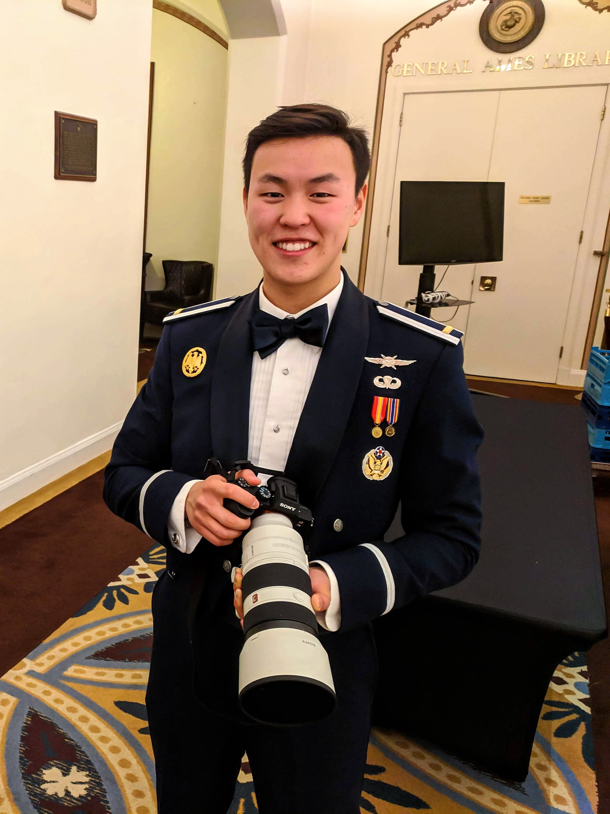

My passion and focus is leading
agile software product teams.
I strive to build and lead diverse, collaborative, and kick-ass teams that deliver a working, reliable product that users love. If you want to learn more about working together, contact me today!
I also do portrait photography. And I like to hack things.

I am a U.S. Air Force Cyberwarfare Officer by trade. I get a good kick out of penetration testing my home devices and participating in Capture-The-Flag events to test my skills.

I love capturing priceless moments on my camera and sharing the stories of amazing people that I meet around the world. I’d be honored to photograph your special occasion.